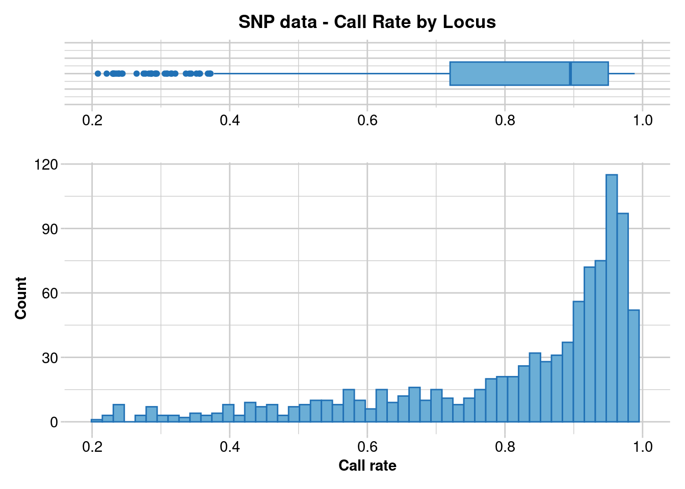
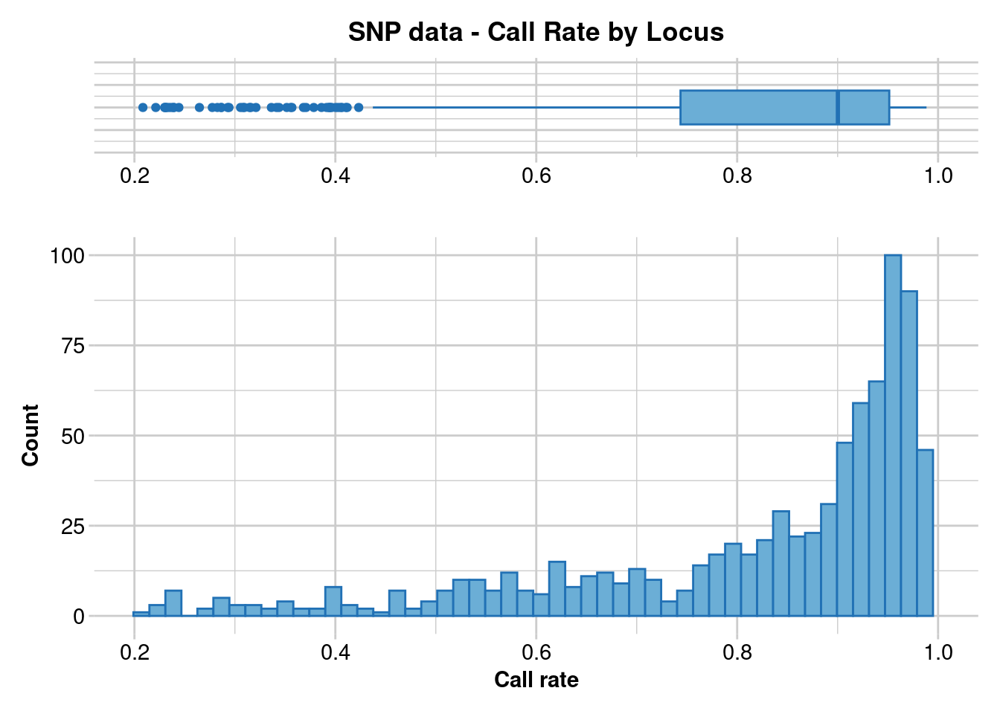
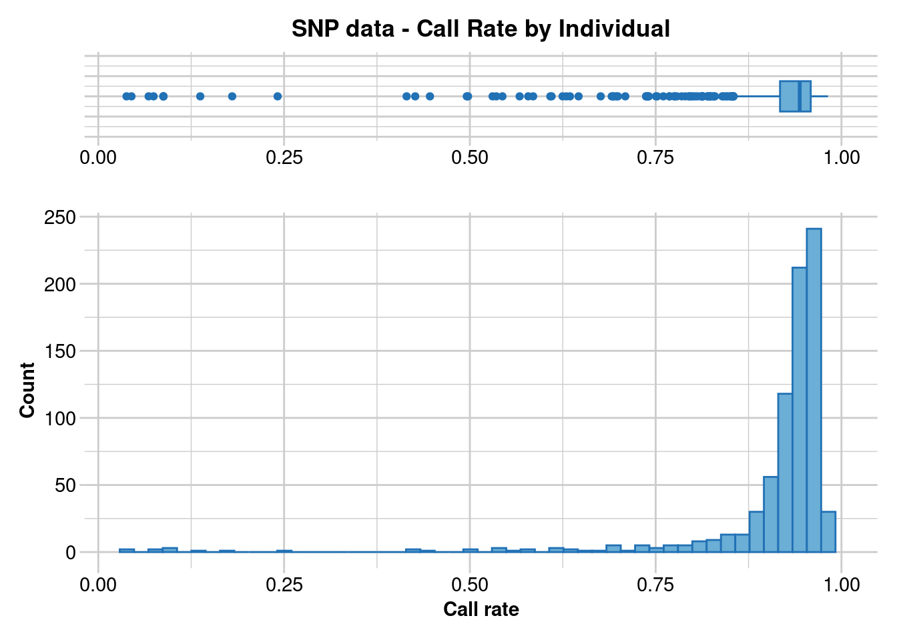
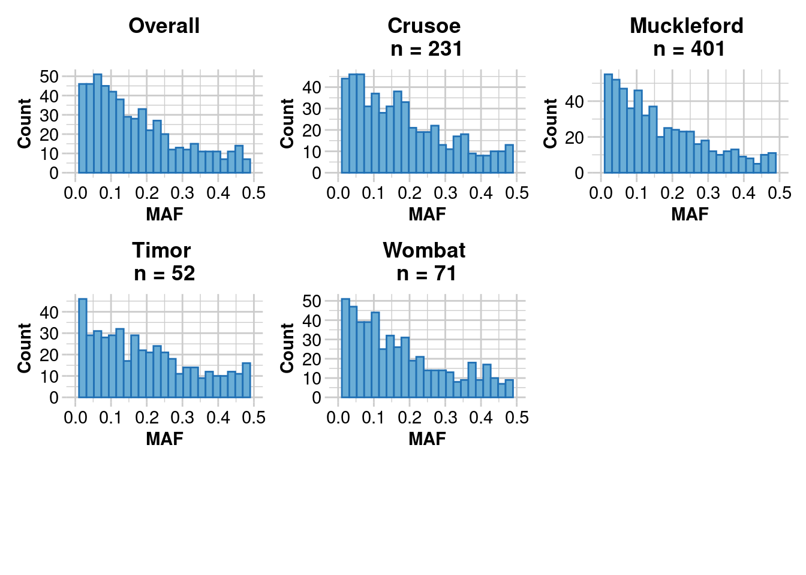
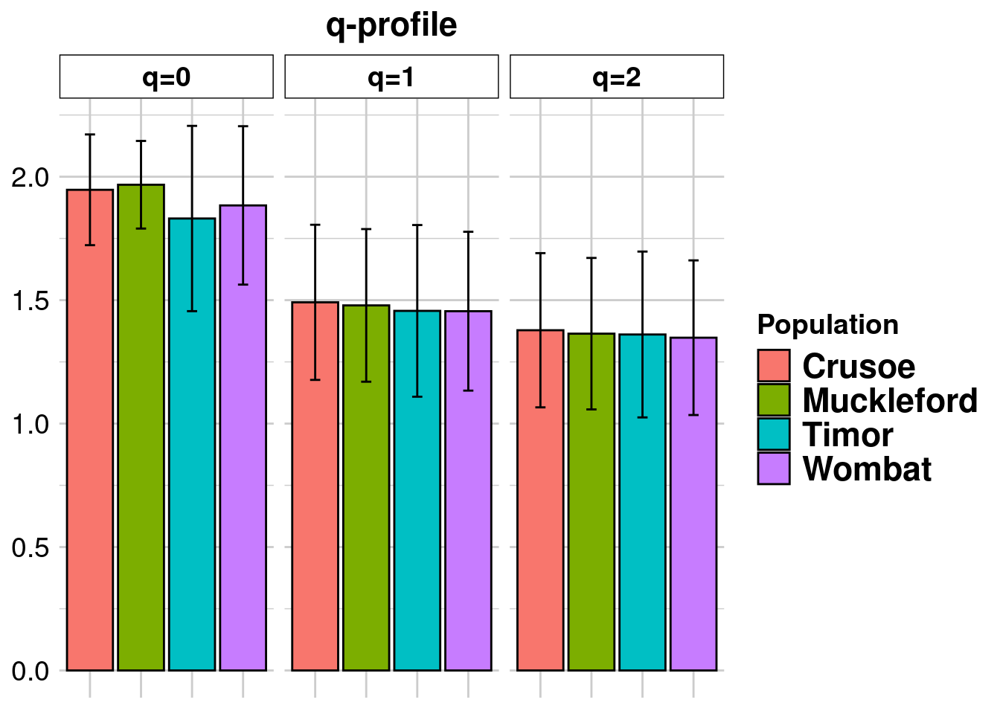
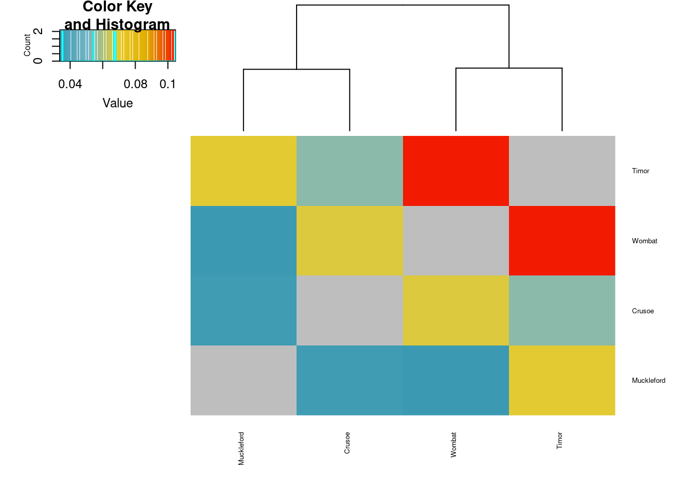
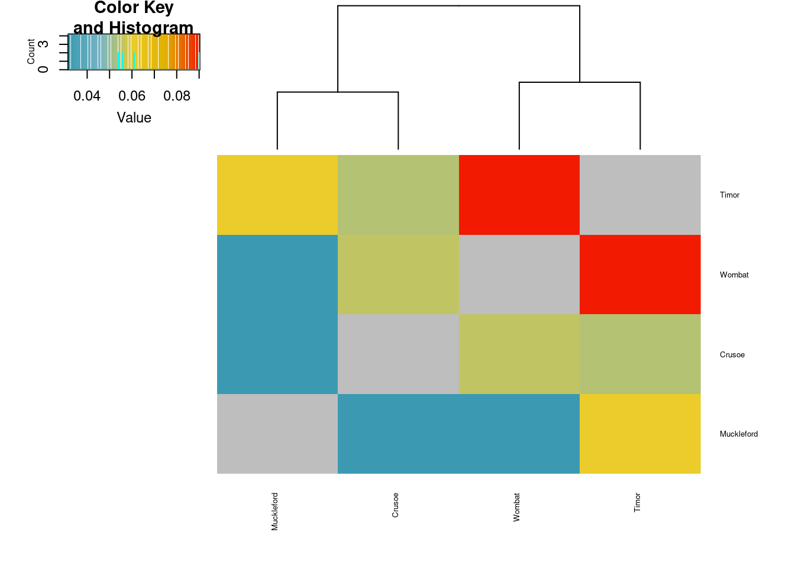
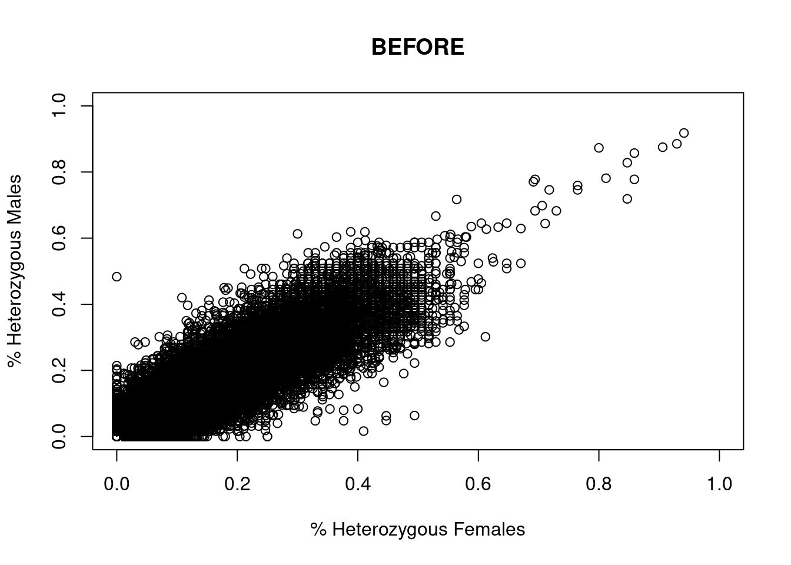

library(dartR.base)
library(dartR.sexlinked)10 Sex Linked Markers
Session presenters
Required packages
Dataset 1 - ZW//ZZ - The Yellow Tufted Honeyeater
Load data
#data("YTH")
load('./data/YTH.rda')
YTH # Explore the dataset ********************
*** DARTR OBJECT ***
********************
** 609 genotypes, 994 SNPs , size: 49.9 Mb
missing data: 139174 (=22.99 %) scored as NA
** Genetic data
@gen: list of 609 SNPbin
@ploidy: ploidy of each individual (range: 2-2)
** Additional data
@ind.names: 609 individual labels
@loc.names: 994 locus labels
@loc.all: 994 allele labels
@position: integer storing positions of the SNPs [within 69 base sequence]
@pop: population of each individual (group size range: 12-516)
@other: a list containing: loc.metrics, ind.metrics, loc.metrics.flags, verbose, history
@other$ind.metrics: id, pop, sex, sex_original, service, plate_location
@other$loc.metrics: AlleleID, CloneID, AlleleSequence, TrimmedSequence, Chrom_Lichenostomus_HeHo_v1, ChromPos_Lichenostomus_HeHo_v1, AlnCnt_Lichenostomus_HeHo_v1, AlnEvalue_Lichenostomus_HeHo_v1, SNP, SnpPosition, CallRate, OneRatioRef, OneRatioSnp, FreqHomRef, FreqHomSnp, FreqHets, PICRef, PICSnp, AvgPIC, AvgCountRef, AvgCountSnp, RepAvg, clone, uid, rdepth, maf
@other$latlon[g]: no coordinates attachedYTH@n.loc # Number of SNPs[1] 994length(YTH@ind.names) # Number of individuals[1] 609Run gl.filter.sexlinked
This function identifies sex-linked and autosomal loci present in a SNP dataset (i.e., genlight object) using individuals with known sex. It identifies five types of loci: w-linked or y-linked, sex-biased, z-linked or x-linked, gametologous and autosomal.
The genlight object must contain in gl@other$ind.metrics a column named “id”, and a column named “sex” in which individuals with known-sex are assigned ‘M’ for male, or ‘F’ for female. The function ignores individuals that are assigned anything else or nothing at all (unknown-sex).

Caution
NOTE
Set ncores to more than 1 (default) if you have more than 50,000 SNPs, since it could actually slow down the analysis with smaller datasets.
knitr::kable(head(YTH@other$ind.metrics)) # Check that ind.metrics has the necessary columns| id | pop | sex | sex_original | service | plate_location | |
|---|---|---|---|---|---|---|
| ANWC46839 | ANWC46839 | Melanops | F | F | DLich17-2918 | 1-A1 |
| W49 | W49 | Cassidix | F | F | DLich17-2918 | 1-A10 |
| W90 | W90 | Cassidix | F | F | DLich17-2918 | 1-A12 |
| C25 | C25 | Cassidix | M | M | DLich17-2918 | 1-A2 |
| C8 | C8 | Cassidix | M | M | DLich17-2918 | 1-A3 |
| W70 | W70 | Cassidix | F | F | DLich17-2918 | 1-A4 |
res <- dartR.sexlinked::gl.filter.sexlinked(gl = YTH, system = "zw")Detected 276 females and 333 males.Starting phase 1. May take a while...Building call rate plots.Done. Starting phase 2.Building heterozygosity plots.Done building heterozygosity plots.**FINISHED** Total of analyzed loci: 994.
Found 506 sex-linked loci:
52 W-linked loci
273 sex-biased loci
165 Z-linked loci
16 ZW gametologs.
And 488 autosomal loci.
Exercise

How many males and females does the dataset contain?
How many sex-linked loci were found?
Now check the output:
res$w.linked # Notice that it says "w-linked" ********************
*** DARTR OBJECT ***
********************
** 609 genotypes, 52 SNPs , size: 48.9 Mb
missing data: 17304 (=54.64 %) scored as NA
** Genetic data
@gen: list of 609 SNPbin
@ploidy: ploidy of each individual (range: 2-2)
** Additional data
@ind.names: 609 individual labels
@loc.names: 52 locus labels
@loc.all: 52 allele labels
@position: integer storing positions of the SNPs [within 69 base sequence]
@pop: population of each individual (group size range: 12-516)
@other: a list containing: loc.metrics, ind.metrics, loc.metrics.flags, verbose, history
@other$ind.metrics: id, pop, sex, sex_original, service, plate_location
@other$loc.metrics: AlleleID, CloneID, AlleleSequence, TrimmedSequence, Chrom_Lichenostomus_HeHo_v1, ChromPos_Lichenostomus_HeHo_v1, AlnCnt_Lichenostomus_HeHo_v1, AlnEvalue_Lichenostomus_HeHo_v1, SNP, SnpPosition, CallRate, OneRatioRef, OneRatioSnp, FreqHomRef, FreqHomSnp, FreqHets, PICRef, PICSnp, AvgPIC, AvgCountRef, AvgCountSnp, RepAvg, clone, uid, rdepth, maf
@other$latlon[g]: no coordinates attachedres$z.linked # Notice that it says "z-linked" ********************
*** DARTR OBJECT ***
********************
** 609 genotypes, 165 SNPs , size: 48.9 Mb
missing data: 2990 (=2.98 %) scored as NA
** Genetic data
@gen: list of 609 SNPbin
@ploidy: ploidy of each individual (range: 2-2)
** Additional data
@ind.names: 609 individual labels
@loc.names: 165 locus labels
@loc.all: 165 allele labels
@position: integer storing positions of the SNPs [within 69 base sequence]
@pop: population of each individual (group size range: 12-516)
@other: a list containing: loc.metrics, ind.metrics, loc.metrics.flags, verbose, history
@other$ind.metrics: id, pop, sex, sex_original, service, plate_location
@other$loc.metrics: AlleleID, CloneID, AlleleSequence, TrimmedSequence, Chrom_Lichenostomus_HeHo_v1, ChromPos_Lichenostomus_HeHo_v1, AlnCnt_Lichenostomus_HeHo_v1, AlnEvalue_Lichenostomus_HeHo_v1, SNP, SnpPosition, CallRate, OneRatioRef, OneRatioSnp, FreqHomRef, FreqHomSnp, FreqHets, PICRef, PICSnp, AvgPIC, AvgCountRef, AvgCountSnp, RepAvg, clone, uid, rdepth, maf
@other$latlon[g]: no coordinates attachedres$gametolog ********************
*** DARTR OBJECT ***
********************
** 609 genotypes, 16 SNPs , size: 48.8 Mb
missing data: 580 (=5.95 %) scored as NA
** Genetic data
@gen: list of 609 SNPbin
@ploidy: ploidy of each individual (range: 2-2)
** Additional data
@ind.names: 609 individual labels
@loc.names: 16 locus labels
@loc.all: 16 allele labels
@position: integer storing positions of the SNPs [within 69 base sequence]
@pop: population of each individual (group size range: 12-516)
@other: a list containing: loc.metrics, ind.metrics, loc.metrics.flags, verbose, history
@other$ind.metrics: id, pop, sex, sex_original, service, plate_location
@other$loc.metrics: AlleleID, CloneID, AlleleSequence, TrimmedSequence, Chrom_Lichenostomus_HeHo_v1, ChromPos_Lichenostomus_HeHo_v1, AlnCnt_Lichenostomus_HeHo_v1, AlnEvalue_Lichenostomus_HeHo_v1, SNP, SnpPosition, CallRate, OneRatioRef, OneRatioSnp, FreqHomRef, FreqHomSnp, FreqHets, PICRef, PICSnp, AvgPIC, AvgCountRef, AvgCountSnp, RepAvg, clone, uid, rdepth, maf
@other$latlon[g]: no coordinates attachedres$sex.biased ********************
*** DARTR OBJECT ***
********************
** 609 genotypes, 273 SNPs , size: 49.2 Mb
missing data: 46048 (=27.7 %) scored as NA
** Genetic data
@gen: list of 609 SNPbin
@ploidy: ploidy of each individual (range: 2-2)
** Additional data
@ind.names: 609 individual labels
@loc.names: 273 locus labels
@loc.all: 273 allele labels
@position: integer storing positions of the SNPs [within 69 base sequence]
@pop: population of each individual (group size range: 12-516)
@other: a list containing: loc.metrics, ind.metrics, loc.metrics.flags, verbose, history
@other$ind.metrics: id, pop, sex, sex_original, service, plate_location
@other$loc.metrics: AlleleID, CloneID, AlleleSequence, TrimmedSequence, Chrom_Lichenostomus_HeHo_v1, ChromPos_Lichenostomus_HeHo_v1, AlnCnt_Lichenostomus_HeHo_v1, AlnEvalue_Lichenostomus_HeHo_v1, SNP, SnpPosition, CallRate, OneRatioRef, OneRatioSnp, FreqHomRef, FreqHomSnp, FreqHets, PICRef, PICSnp, AvgPIC, AvgCountRef, AvgCountSnp, RepAvg, clone, uid, rdepth, maf
@other$latlon[g]: no coordinates attachedres$autosomal ********************
*** DARTR OBJECT ***
********************
** 609 genotypes, 488 SNPs , size: 49.4 Mb
missing data: 72252 (=24.31 %) scored as NA
** Genetic data
@gen: list of 609 SNPbin
@ploidy: ploidy of each individual (range: 2-2)
** Additional data
@ind.names: 609 individual labels
@loc.names: 488 locus labels
@loc.all: 488 allele labels
@position: integer storing positions of the SNPs [within 69 base sequence]
@pop: population of each individual (group size range: 12-516)
@other: a list containing: loc.metrics, ind.metrics, loc.metrics.flags, verbose, history
@other$ind.metrics: id, pop, sex, sex_original, service, plate_location
@other$loc.metrics: AlleleID, CloneID, AlleleSequence, TrimmedSequence, Chrom_Lichenostomus_HeHo_v1, ChromPos_Lichenostomus_HeHo_v1, AlnCnt_Lichenostomus_HeHo_v1, AlnEvalue_Lichenostomus_HeHo_v1, SNP, SnpPosition, CallRate, OneRatioRef, OneRatioSnp, FreqHomRef, FreqHomSnp, FreqHets, PICRef, PICSnp, AvgPIC, AvgCountRef, AvgCountSnp, RepAvg, clone, uid, rdepth, maf
@other$latlon[g]: no coordinates attachedknitr::kable(head(res$results.table)) # The output table| index | count.F.miss | count.M.miss | count.F.scored | count.M.scored | ratio | p.value | p.adjusted | scoringRate.F | scoringRate.M | w.linked | sex.biased | count.F.het | count.M.het | count.F.hom | count.M.hom | stat | stat.p.value | stat.p.adjusted | heterozygosity.F | heterozygosity.M | z.linked | zw.gametolog | |
|---|---|---|---|---|---|---|---|---|---|---|---|---|---|---|---|---|---|---|---|---|---|---|---|
| 27382025-26-T/C | 1 | 61 | 25 | 215 | 308 | 3.4882302 | 0.0000003 | 0.0000016 | 0.7789855 | 0.9249249 | FALSE | TRUE | 0 | 73 | 215 | 235 | NA | NA | NA | 0.0000000 | 0.2370130 | FALSE | FALSE |
| 27338005-34-A/G | 2 | 12 | 13 | 264 | 320 | 1.1186728 | 0.8390268 | 1.0000000 | 0.9565217 | 0.9609610 | FALSE | FALSE | 0 | 144 | 264 | 176 | 0.0046581 | 0.0000000 | 0.0000000 | 0.0000000 | 0.4500000 | TRUE | FALSE |
| 27331627-16-T/G | 3 | 108 | 159 | 168 | 174 | 0.7039235 | 0.0334301 | 0.0860868 | 0.6086957 | 0.5225225 | FALSE | FALSE | 0 | 2 | 168 | 172 | 0.5128690 | 1.0000000 | 1.0000000 | 0.0000000 | 0.0114943 | FALSE | FALSE |
| 53948461-35-G/A | 4 | 46 | 64 | 230 | 269 | 0.8408645 | 0.4593502 | 0.7791707 | 0.8333333 | 0.8078078 | FALSE | FALSE | 29 | 27 | 201 | 242 | 1.2924846 | 0.3950852 | 0.9051780 | 0.1260870 | 0.1003717 | FALSE | FALSE |
| 27360874-8-A/G | 5 | 41 | 63 | 235 | 270 | 0.7480768 | 0.1956613 | 0.4120495 | 0.8514493 | 0.8108108 | FALSE | FALSE | 25 | 38 | 210 | 232 | 0.7272744 | 0.2807852 | 0.7009152 | 0.1063830 | 0.1407407 | FALSE | FALSE |
| 27377678-32-C/A | 6 | 30 | 33 | 246 | 300 | 1.1084581 | 0.7894511 | 1.0000000 | 0.8913043 | 0.9009009 | FALSE | FALSE | 3 | 6 | 243 | 294 | 0.6054740 | 0.5234966 | 1.0000000 | 0.0121951 | 0.0200000 | FALSE | FALSE |
The output consists of a genlight object for each type of loci, plus a results table.
Run gl.infer.sex
This function uses the complete output of function gl.filter.sexlinked (list of 6 objects) to infer the sex of all individuals in the dataset. Specifically, the function uses 3 types of sex-linked loci (W-/Y-linked, Z-/X-linked, and gametologs), assigns a preliminary genetic sex for each type of sex-linked loci available, and outputs an agreed sex.
sexID <- dartR.sexlinked::gl.infer.sex(gl_sex_filtered = res, system = "zw", seed = 124)***FINISHED***knitr::kable(head(sexID))| id | w.linked.sex | #missing | #called | z.linked.sex | #Hom.z | #Het.z | gametolog.sex | #Hom.g | #Het.g | agreed.sex | |
|---|---|---|---|---|---|---|---|---|---|---|---|
| ANWC46839 | ANWC46839 | F | 51 | 1 | F | 1 | 141 | F | 5 | 0 | F |
| W49 | W49 | F | 52 | 0 | F | 2 | 156 | F | 5 | 0 | F |
| W90 | W90 | F | 48 | 4 | F | 0 | 162 | F | 5 | 0 | F |
| C25 | C25 | M | 0 | 52 | M | 52 | 113 | M | 0 | 5 | M |
| C8 | C8 | M | 0 | 52 | M | 48 | 116 | M | 0 | 5 | M |
| W70 | W70 | F | 49 | 3 | F | 0 | 152 | F | 5 | 0 | F |
Warning
IMPORTANT We created this function with the explicit intent that a human checks the evidence for the agreed sex that do NOT agree for all types of sex-linked loci (denoted as ‘*M’ or ‘*F’). This human can then use their criterion to validate these assignments.
Exercise

Can you find individuals for which the agreed sex is uncertain (i.e., has an asterisk “*”)?
Dataset 2 - XX/XY - The Leadbeater’s possum
Load data
#data("LBP")
load('./data/LBP.rda')
LBP # Explore the dataset ********************
*** DARTR OBJECT ***
********************
** 376 genotypes, 1,000 SNPs , size: 5.2 Mb
missing data: 20670 (=5.5 %) scored as NA
** Genetic data
@gen: list of 376 SNPbin
@ploidy: ploidy of each individual (range: 2-2)
** Additional data
@ind.names: 376 individual labels
@loc.names: 1000 locus labels
@loc.all: 1000 allele labels
@position: integer storing positions of the SNPs [within 69 base sequence]
@pop: population of each individual (group size range: 95-281)
@other: a list containing: loc.metrics, ind.metrics, loc.metrics.flags, verbose, history
@other$ind.metrics: id, sex, pop, Year.collected, service, plate_location
@other$loc.metrics: AlleleID, CloneID, AlleleSequence, TrimmedSequence, Chrom_Possum_v2, ChromPos_Possum_v2, AlnCnt_Possum_v2, AlnEvalue_Possum_v2, SNP, SnpPosition, CallRate, OneRatioRef, OneRatioSnp, FreqHomRef, FreqHomSnp, FreqHets, PICRef, PICSnp, AvgPIC, AvgCountRef, AvgCountSnp, RepAvg, clone, uid, rdepth, monomorphs, maf, OneRatio, PIC
@other$latlon[g]: no coordinates attachedLBP@n.loc # Number of SNPs[1] 1000length(LBP@ind.names) # Number of individuals[1] 376Run gl.filter.sexlinked
This function identifies sex-linked and autosomal loci present in a SNP dataset (genlight object) using individuals with known sex. It identifies five types of loci: w-linked or y-linked, sex-biased, z-linked or x-linked, gametologous and autosomal.
The genlight object must contain in gl@other$ind.metrics a column named “id”, and a column named “sex” in which individuals with known-sex are assigned ‘M’ for male, or ‘F’ for female. The function ignores individuals that are assigned anything else or nothing at all (unknown-sex).

knitr::kable(head(LBP@other$ind.metrics)) # Check that ind.metrics has the necessary columns| id | sex | pop | Year.collected | service | plate_location | |
|---|---|---|---|---|---|---|
| Y2 | Y2 | F | Yellingbo | 1997 | DLpos17-2786 | 1-A1 |
| Y16 | Y16 | M | Yellingbo | 2001 | DLpos17-2786 | 1-A10 |
| Y17 | Y17 | F | Yellingbo | 1997 | DLpos17-2786 | 1-A11 |
| Y18 | Y18 | F | Yellingbo | 1999 | DLpos17-2786 | 1-A12 |
| Y3 | Y3 | F | Yellingbo | 1997 | DLpos17-2786 | 1-A2 |
| Y4 | Y4 | M | Yellingbo | 1997 | DLpos17-2786 | 1-A3 |
res <- dartR.sexlinked::gl.filter.sexlinked(gl = LBP, system = "xy")Detected 162 females and 211 males.Starting phase 1. May take a while...Building call rate plots.Done. Starting phase 2.Building heterozygosity plots.Done building heterozygosity plots.**FINISHED** Total of analyzed loci: 1000.
Found 77 sex-linked loci:
1 Y-linked loci
9 sex-biased loci
66 X-linked loci
1 XY gametologs.
And 923 autosomal loci.
Exercise

How many males and females does the dataset contain?
How many sex-linked loci were found?
Now check the output:
res$y.linked # Notice that it says "y-linked" ********************
*** DARTR OBJECT ***
********************
** 376 genotypes, 1 SNPs , size: 4.7 Mb
missing data: 164 (=43.62 %) scored as NA
** Genetic data
@gen: list of 376 SNPbin
@ploidy: ploidy of each individual (range: 2-2)
** Additional data
@ind.names: 376 individual labels
@loc.names: 1 locus labels
@loc.all: 1 allele labels
@position: integer storing positions of the SNPs [within 69 base sequence]
@pop: population of each individual (group size range: 95-281)
@other: a list containing: loc.metrics, ind.metrics, loc.metrics.flags, verbose, history
@other$ind.metrics: id, sex, pop, Year.collected, service, plate_location
@other$loc.metrics: AlleleID, CloneID, AlleleSequence, TrimmedSequence, Chrom_Possum_v2, ChromPos_Possum_v2, AlnCnt_Possum_v2, AlnEvalue_Possum_v2, SNP, SnpPosition, CallRate, OneRatioRef, OneRatioSnp, FreqHomRef, FreqHomSnp, FreqHets, PICRef, PICSnp, AvgPIC, AvgCountRef, AvgCountSnp, RepAvg, clone, uid, rdepth, monomorphs, maf, OneRatio, PIC
@other$latlon[g]: no coordinates attachedres$x.linked # Notice that it says "x-linked" ********************
*** DARTR OBJECT ***
********************
** 376 genotypes, 66 SNPs , size: 4.7 Mb
missing data: 827 (=3.33 %) scored as NA
** Genetic data
@gen: list of 376 SNPbin
@ploidy: ploidy of each individual (range: 2-2)
** Additional data
@ind.names: 376 individual labels
@loc.names: 66 locus labels
@loc.all: 66 allele labels
@position: integer storing positions of the SNPs [within 69 base sequence]
@pop: population of each individual (group size range: 95-281)
@other: a list containing: loc.metrics, ind.metrics, loc.metrics.flags, verbose, history
@other$ind.metrics: id, sex, pop, Year.collected, service, plate_location
@other$loc.metrics: AlleleID, CloneID, AlleleSequence, TrimmedSequence, Chrom_Possum_v2, ChromPos_Possum_v2, AlnCnt_Possum_v2, AlnEvalue_Possum_v2, SNP, SnpPosition, CallRate, OneRatioRef, OneRatioSnp, FreqHomRef, FreqHomSnp, FreqHets, PICRef, PICSnp, AvgPIC, AvgCountRef, AvgCountSnp, RepAvg, clone, uid, rdepth, monomorphs, maf, OneRatio, PIC
@other$latlon[g]: no coordinates attachedres$gametolog ********************
*** DARTR OBJECT ***
********************
** 376 genotypes, 1 SNPs , size: 4.7 Mb
missing data: 0 (=0 %) scored as NA
** Genetic data
@gen: list of 376 SNPbin
@ploidy: ploidy of each individual (range: 2-2)
** Additional data
@ind.names: 376 individual labels
@loc.names: 1 locus labels
@loc.all: 1 allele labels
@position: integer storing positions of the SNPs [within 69 base sequence]
@pop: population of each individual (group size range: 95-281)
@other: a list containing: loc.metrics, ind.metrics, loc.metrics.flags, verbose, history
@other$ind.metrics: id, sex, pop, Year.collected, service, plate_location
@other$loc.metrics: AlleleID, CloneID, AlleleSequence, TrimmedSequence, Chrom_Possum_v2, ChromPos_Possum_v2, AlnCnt_Possum_v2, AlnEvalue_Possum_v2, SNP, SnpPosition, CallRate, OneRatioRef, OneRatioSnp, FreqHomRef, FreqHomSnp, FreqHets, PICRef, PICSnp, AvgPIC, AvgCountRef, AvgCountSnp, RepAvg, clone, uid, rdepth, monomorphs, maf, OneRatio, PIC
@other$latlon[g]: no coordinates attachedres$sex.biased ********************
*** DARTR OBJECT ***
********************
** 376 genotypes, 9 SNPs , size: 4.7 Mb
missing data: 853 (=25.21 %) scored as NA
** Genetic data
@gen: list of 376 SNPbin
@ploidy: ploidy of each individual (range: 2-2)
** Additional data
@ind.names: 376 individual labels
@loc.names: 9 locus labels
@loc.all: 9 allele labels
@position: integer storing positions of the SNPs [within 69 base sequence]
@pop: population of each individual (group size range: 95-281)
@other: a list containing: loc.metrics, ind.metrics, loc.metrics.flags, verbose, history
@other$ind.metrics: id, sex, pop, Year.collected, service, plate_location
@other$loc.metrics: AlleleID, CloneID, AlleleSequence, TrimmedSequence, Chrom_Possum_v2, ChromPos_Possum_v2, AlnCnt_Possum_v2, AlnEvalue_Possum_v2, SNP, SnpPosition, CallRate, OneRatioRef, OneRatioSnp, FreqHomRef, FreqHomSnp, FreqHets, PICRef, PICSnp, AvgPIC, AvgCountRef, AvgCountSnp, RepAvg, clone, uid, rdepth, monomorphs, maf, OneRatio, PIC
@other$latlon[g]: no coordinates attachedres$autosomal ********************
*** DARTR OBJECT ***
********************
** 376 genotypes, 923 SNPs , size: 5.2 Mb
missing data: 18826 (=5.42 %) scored as NA
** Genetic data
@gen: list of 376 SNPbin
@ploidy: ploidy of each individual (range: 2-2)
** Additional data
@ind.names: 376 individual labels
@loc.names: 923 locus labels
@loc.all: 923 allele labels
@position: integer storing positions of the SNPs [within 69 base sequence]
@pop: population of each individual (group size range: 95-281)
@other: a list containing: loc.metrics, ind.metrics, loc.metrics.flags, verbose, history
@other$ind.metrics: id, sex, pop, Year.collected, service, plate_location
@other$loc.metrics: AlleleID, CloneID, AlleleSequence, TrimmedSequence, Chrom_Possum_v2, ChromPos_Possum_v2, AlnCnt_Possum_v2, AlnEvalue_Possum_v2, SNP, SnpPosition, CallRate, OneRatioRef, OneRatioSnp, FreqHomRef, FreqHomSnp, FreqHets, PICRef, PICSnp, AvgPIC, AvgCountRef, AvgCountSnp, RepAvg, clone, uid, rdepth, monomorphs, maf, OneRatio, PIC
@other$latlon[g]: no coordinates attachedknitr::kable(head(res$results.table)) # The output table| index | count.F.miss | count.M.miss | count.F.scored | count.M.scored | ratio | p.value | p.adjusted | scoringRate.F | scoringRate.M | y.linked | sex.biased | count.F.het | count.M.het | count.F.hom | count.M.hom | stat | stat.p.value | stat.p.adjusted | heterozygosity.F | heterozygosity.M | x.linked | xy.gametolog | |
|---|---|---|---|---|---|---|---|---|---|---|---|---|---|---|---|---|---|---|---|---|---|---|---|
| 28681424-34-G/T | 1 | 0 | 1 | 162 | 210 | 1.2953770 | 1.0000000 | 1 | 1.0000000 | 0.9952607 | FALSE | FALSE | 1 | 0 | 161 | 210 | 1.303397 | 1.0000000 | 1.0000000 | 0.0061728 | 0.0000000 | FALSE | FALSE |
| 28678947-56-C/T | 2 | 12 | 8 | 150 | 203 | 2.0261283 | 0.1638428 | 1 | 0.9259259 | 0.9620853 | FALSE | FALSE | 9 | 7 | 141 | 196 | 1.784196 | 0.3044519 | 0.9598961 | 0.0600000 | 0.0344828 | FALSE | FALSE |
| 28680567-32-T/G | 3 | 12 | 12 | 150 | 199 | 1.3256351 | 0.5289429 | 1 | 0.9259259 | 0.9431280 | FALSE | FALSE | 9 | 11 | 141 | 188 | 1.090635 | 1.0000000 | 1.0000000 | 0.0600000 | 0.0552764 | FALSE | FALSE |
| 28688313-7-C/G | 4 | 0 | 0 | 162 | 211 | 1.3015303 | 1.0000000 | 1 | 1.0000000 | 1.0000000 | FALSE | FALSE | 6 | 0 | 156 | 211 | 8.076192 | 0.0459068 | 0.3917911 | 0.0370370 | 0.0000000 | FALSE | FALSE |
| 28681679-51-C/T | 5 | 22 | 30 | 140 | 181 | 0.9482168 | 0.8814171 | 1 | 0.8641975 | 0.8578199 | FALSE | FALSE | 1 | 1 | 139 | 180 | 1.293900 | 1.0000000 | 1.0000000 | 0.0071429 | 0.0055249 | FALSE | FALSE |
| 28681994-14-G/A | 6 | 0 | 1 | 162 | 210 | 1.2953770 | 1.0000000 | 1 | 1.0000000 | 0.9952607 | FALSE | FALSE | 18 | 19 | 144 | 191 | 1.255791 | 0.6007790 | 1.0000000 | 0.1111111 | 0.0904762 | FALSE | FALSE |
The output consists of a genlight object for each type of loci, plus a results table.
Run gl.infer.sex
This function uses the output of function gl.filter.sexlinked (list of 6 objects) to infer the sex of all individuals in the dataset. It uses 3 types of sex-linked loci (W-/Y-linked, Z-/X-linked, and gametologs), assigns a preliminary genetic sex for each type of sex-linked loci available, and outputs an agreed sex.
sexID <- dartR.sexlinked::gl.infer.sex(gl_sex_filtered = res, system = "xy", seed = 124)Not enough gametologs (need at least 5). Assigning NA...***FINISHED***knitr::kable(head(sexID))| id | y.linked.sex | #called | #missing | x.linked.sex | #Het.x | #Hom.x | gametolog.sex | #Het.g | #Hom.g | agreed.sex | |
|---|---|---|---|---|---|---|---|---|---|---|---|
| Y2 | Y2 | F | 0 | 1 | F | 19 | 47 | NA | NA | NA | F |
| Y16 | Y16 | M | 1 | 0 | M | 2 | 56 | NA | NA | NA | M |
| Y17 | Y17 | F | 0 | 1 | F | 27 | 37 | NA | NA | NA | F |
| Y18 | Y18 | F | 0 | 1 | M | 4 | 62 | NA | NA | NA | *F |
| Y3 | Y3 | M | 1 | 0 | M | 3 | 63 | NA | NA | NA | M |
| Y4 | Y4 | M | 1 | 0 | M | 1 | 63 | NA | NA | NA | M |
What did the function mention about gametologs? How did that impact the results table? How many types of sex-linked loci were used to infer an agreed sex?
Exercise

Can you find individuals for which the agreed sex is uncertain (i.e., has an asterisk “*”)?
EXERCISE
Exercise

Imagine you are analyzing the genetic data of a population and you want to look at its genetic structure and genetic diversity. You get to work by filtering your beautiful set of SNPs. Because you are a rigorous, you want to test whether using function gl.filter.sexlinked to properly filter out sex-linked loci changes the results of the populations analyses. So you: (1) process your SNP dataset by applying standard filters and run analyses, and (2) process the dataset by filtering out sex-linked loci first, applying standard filters second, and then run analyses.
Choose one of the following datasets (or your own data) and report:
How many sex-linked markers are present?
How many individuals had a wrong sexID?
Do you see any changes in your PCA/structure analyses when you filtered out sex-linked markers versus when you did not?
Do you see any differences in genetic diversity and fixation indices when you filtered out sex-linked markers versus when you did not?


Further study
Exercise data 1 - Your own data
HINT
You can have a look at the exercise data below for inspiration.
Exercise - Your own data
Number of sex-linked markers?
Individuals with wrong sexID?
Changes in PCA before and after removing the SLM?
Differences in genetic diversity and fixation indices between autosomal and SLM?
Exercise data 2 - The Eastern Yellow Robin
Data from Robledo-Ruiz et al. (2023)
Load data
#data("EYR")
load('./data/EYR.rda')
EYR@n.loc
table(EYR@pop)
table(EYR@other$ind.metrics$pop)
table(EYR@other$ind.metrics$sex, useNA = "ifany")[1] 1000
Crusoe Muckleford Timor Wombat
238 421 52 71
Crusoe Muckleford Timor Wombat
238 421 52 71
F M
1 352 429 1. Number of sex-linked markers?
res <- dartR.sexlinked::gl.filter.sexlinked(gl = EYR, system = "zw")Detected 352 females and 429 males.Starting phase 1. May take a while...Building call rate plots.
Done. Starting phase 2.Building heterozygosity plots.Done building heterozygosity plots.**FINISHED** Total of analyzed loci: 1000.
Found 150 sex-linked loci:
16 W-linked loci
82 sex-biased loci
32 Z-linked loci
20 ZW gametologs.
And 850 autosomal loci.2. Individuals with wrong sexID?
sexID <- dartR.sexlinked::gl.infer.sex(gl_sex_filtered = res, system = "zw", seed = 124)***FINISHED***knitr::kable(head(sexID))
sum(EYR$other$ind.metrics$sex != sexID$agreed.sex, na.rm = TRUE)| id | w.linked.sex | #missing | #called | z.linked.sex | #Hom.z | #Het.z | gametolog.sex | #Hom.g | #Het.g | agreed.sex | |
|---|---|---|---|---|---|---|---|---|---|---|---|
| 024-96401 | 024-96401 | M | 0 | 16 | M | 7 | 25 | M | 0 | 5 | M |
| 024-96401b | 024-96401b | M | 0 | 16 | M | 9 | 21 | M | 0 | 5 | M |
| 024-96402 | 024-96402 | F | 15 | 1 | F | 0 | 32 | F | 5 | 0 | F |
| 024-96403 | 024-96403 | M | 1 | 15 | M | 11 | 21 | M | 0 | 5 | M |
| 024-96404 | 024-96404 | M | 0 | 16 | M | 12 | 20 | M | 0 | 5 | M |
| 024-96405 | 024-96405 | M | 0 | 16 | M | 11 | 21 | M | 0 | 5 | M |
[1] 55
Exercise

Can you tell which misidentified sexes are due to uncertain genetic sex (indicated with *)?
HINT Try using grep(pattern = "\\*", x = sexID$agreed.sex)
Processing SNPs with two filtering regimes
Filtering SNPs only with standard filters (sloppy)
# Filter for read depth
dartR.base::gl.report.rdepth(EYR) # This is the initial datasetStarting ::
Starting dartR.base
Starting gl.report.rdepth
Processing genlight object with SNP data
Reporting Read Depth by Locus
No. of loci = 1000
No. of individuals = 782
Minimum : 2.6
1st quartile : 4.3
Median : 5.6
Mean : 5.9649
3r quartile : 7.325
Maximum : 13.2
Missing Rate Overall: 0.19 Quantile Threshold Retained Percent Filtered Percent
1 100% 13.2 1 0.1 999 99.9
2 95% 9.9 51 5.1 949 94.9
3 90% 9.0 105 10.5 895 89.5
4 85% 8.3 151 15.1 849 84.9
5 80% 7.8 208 20.8 792 79.2
6 75% 7.3 258 25.8 742 74.2
7 70% 6.9 304 30.4 696 69.6
8 65% 6.5 354 35.4 646 64.6
9 60% 6.2 404 40.4 596 59.6
10 55% 5.9 451 45.1 549 54.9
11 50% 5.6 504 50.4 496 49.6
12 45% 5.3 563 56.3 437 43.7
13 40% 5.1 602 60.2 398 39.8
14 35% 4.8 659 65.9 341 34.1
15 30% 4.6 702 70.2 298 29.8
16 25% 4.3 752 75.2 248 24.8
17 20% 4.0 823 82.3 177 17.7
18 15% 3.9 852 85.2 148 14.8
19 10% 3.6 906 90.6 94 9.4
20 5% 3.3 956 95.6 44 4.4
21 0% 2.6 1000 100.0 0 0.0
Completed: ::
Completed: dartR.base
Completed: gl.report.rdepth EYR.sloppy <- dartR.base::gl.filter.rdepth(EYR, lower = 3, upper = 11, verbose = 0)# Filter for loci call rate
dartR.base::gl.report.callrate(EYR.sloppy, method = "loc")Starting ::
Starting dartR.base
Starting gl.report.callrate
Processing genlight object with SNP data
Reporting Call Rate by Locus
No. of loci = 958
No. of individuals = 782
Minimum : 0.20844
1st quartile : 0.7202688
Median : 0.895141
Mean : 0.8131871
3r quartile : 0.950128
Maximum : 0.988491
Missing Rate Overall: 0.1868 
Completed: ::
Completed: dartR.base
Completed: gl.report.callrate EYR.sloppy <- dartR.base::gl.filter.callrate(EYR.sloppy, method = "loc", threshold = 0.75, verbose = 0, recalc = TRUE)
# Filter for individual call rate
dartR.base::gl.report.callrate(EYR.sloppy, method = "ind")Starting ::
Starting dartR.base
Starting gl.report.callrate
Processing genlight object with SNP data
Reporting Call Rate by Individual
No. of loci = 703
No. of individuals = 782
Minimum : 0.03556188
1st quartile : 0.9174964
Median : 0.9416785
Mean : 0.9108097
3r quartile : 0.9573257
Maximum : 0.9829303
Missing Rate Overall: 0.0892
Listing 4 populations and their average CallRates
Monitor again after filtering
Population CallRate N
1 Crusoe 0.9027 238
2 Muckleford 0.9073 421
3 Timor 0.9402 52
4 Wombat 0.9371 71
Listing 20 individuals with the lowest CallRates
Use this list to see which individuals will be lost on filtering by individual
Set ind.to.list parameter to see more individuals
Individual CallRate
1 M18.29.1 0.03556188
2 M18.18.1 0.03982930
3 M18.47.2 0.06970128
4 C18.16.1 0.07112376
5 027-34168 0.07681366
6 C18.15.2 0.08534851
7 C18.21.2 0.08677098
8 M18.47.3 0.14224751
9 M18.35.2 0.17211949
10 M18.20.3 0.24039829
11 M20.70.2 0.39687055
12 C18.28.1 0.39971550
13 C18.17.2 0.46088193
14 027-34065 0.50640114
15 C18.14.1 0.50640114
16 M20.70.3 0.50782361
17 M20.110.1 0.52347084
18 M19.12.1 0.53342817
19 M19.8.1 0.54907539
20 M20.64.3 0.56045519
)Completed: ::
Completed: dartR.base
Completed: gl.report.callrate EYR.sloppy <- dartR.base::gl.filter.callrate(EYR.sloppy, method = "ind", threshold = 0.65, verbose = 0, recalc = TRUE)# Filter for MAC (= 3)
dartR.base::gl.report.maf(EYR.sloppy)Starting ::
Starting dartR.base
Starting gl.report.maf
Processing genlight object with SNP data
Starting ::
Starting dartR.base
Starting gl.report.maf
Reporting Minor Allele Frequency (MAF) by Locus for population Crusoe
No. of loci = 670
No. of individuals = 231
Minimum : 0.0022
1st quantile : 0.064825
Median : 0.1582
Mean : 0.1793525
3r quantile : 0.267475
Maximum : 0.4975
Missing Rate Overall: 0.08
Reporting Minor Allele Frequency (MAF) by Locus for population Muckleford
No. of loci = 683
No. of individuals = 401
Minimum : 0.0013
1st quantile : 0.05875
Median : 0.1404
Mean : 0.1729489
3r quantile : 0.2617
Maximum : 0.4985
Missing Rate Overall: 0.07
Reporting Minor Allele Frequency (MAF) by Locus for population Timor
No. of loci = 589
No. of individuals = 52
Minimum : 0.0096
1st quantile : 0.0673
Median : 0.1667
Mean : 0.1914129
3r quantile : 0.2872
Maximum : 0.5
Missing Rate Overall: 0.06
Reporting Minor Allele Frequency (MAF) by Locus for population Wombat
No. of loci = 627
No. of individuals = 71
Minimum : 0.007
1st quantile : 0.06385
Median : 0.1449
Mean : 0.1746703
3r quantile : 0.2542
Maximum : 0.5
Missing Rate Overall: 0.06
Reporting Minor Allele Frequency (MAF) by Locus OVERALL
No. of loci = 703
No. of individuals = 755
Minimum : 7e-04
1st quantile : 0.0618
Median : 0.1443
Mean : 0.1711869
3r quantile : 0.254425
Maximum : 0.5
Missing Rate Overall: 0.07 Quantile Threshold Retained Percent Filtered Percent
1 100% 0.5000 1 0.1 699 99.9
2 95% 0.4431 36 5.1 664 94.9
3 90% 0.3812 71 10.1 629 89.9
4 85% 0.3346 105 15.0 595 85.0
5 80% 0.2873 141 20.1 559 79.9
6 75% 0.2537 176 25.1 524 74.9
7 70% 0.2279 210 30.0 490 70.0
8 65% 0.2009 246 35.1 454 64.9
9 60% 0.1779 280 40.0 420 60.0
10 55% 0.1595 315 45.0 385 55.0
11 50% 0.1442 351 50.1 349 49.9
12 45% 0.1210 386 55.1 314 44.9
13 40% 0.1024 422 60.3 278 39.7
14 35% 0.0872 455 65.0 245 35.0
15 30% 0.0755 490 70.0 210 30.0
16 25% 0.0618 526 75.1 174 24.9
17 20% 0.0487 561 80.1 139 19.9
18 15% 0.0346 595 85.0 105 15.0
19 10% 0.0227 631 90.1 69 9.9
20 5% 0.0053 666 95.1 34 4.9
21 0% 0.0007 700 100.0 0 0.0
Completed: ::
Completed: dartR.base
Completed: gl.report.maf EYR.sloppy <- dartR.base::gl.filter.maf(EYR.sloppy, threshold = 3, verbose = 0, recalc = TRUE)Starting gl.select.colors
Warning: Number of required colors not specified, set to 9
Library: RColorBrewer
Palette: brewer.pal
Showing and returning 2 of 9 colors for library RColorBrewer : palette Blues 
Completed: gl.select.colors Filtering SNPs with gl.filter.sexlinked and standard filters (correct)
# Filter for sex-linked loci
correct <- dartR.sexlinked::gl.filter.sexlinked(EYR, system = "zw") # This is the initial dataset


# We will use correct$autosomal for the next filters
# Filter for read depth
dartR.base::gl.report.rdepth(correct$autosomal) # This is the filtered datasetStarting ::
Starting dartR.base
Starting gl.report.rdepth
Processing genlight object with SNP data
Reporting Read Depth by Locus
No. of loci = 850
No. of individuals = 782
Minimum : 2.6
1st quartile : 4.3
Median : 5.6
Mean : 6.008941
3r quartile : 7.4
Maximum : 13.2
Missing Rate Overall: 0.18 Quantile Threshold Retained Percent Filtered Percent
1 100% 13.2 1 0.1 849 99.9
2 95% 9.9 45 5.3 805 94.7
3 90% 9.1 88 10.4 762 89.6
4 85% 8.4 129 15.2 721 84.8
5 80% 7.9 173 20.4 677 79.6
6 75% 7.4 220 25.9 630 74.1
7 70% 6.9 264 31.1 586 68.9
8 65% 6.5 305 35.9 545 64.1
9 60% 6.2 350 41.2 500 58.8
10 55% 5.9 391 46.0 459 54.0
11 50% 5.6 435 51.2 415 48.8
12 45% 5.4 472 55.5 378 44.5
13 40% 5.1 519 61.1 331 38.9
14 35% 4.9 555 65.3 295 34.7
15 30% 4.6 603 70.9 247 29.1
16 25% 4.3 645 75.9 205 24.1
17 20% 4.0 705 82.9 145 17.1
18 15% 3.9 730 85.9 120 14.1
19 10% 3.6 774 91.1 76 8.9
20 5% 3.3 812 95.5 38 4.5
21 0% 2.6 850 100.0 0 0.0
Completed: ::
Completed: dartR.base
Completed: gl.report.rdepth EYR.correct <- dartR.base::gl.filter.rdepth(correct$autosomal, lower = 3, upper = 11, verbose = 0)# Filter for loci call rate
dartR.base::gl.report.callrate(EYR.correct, method = "loc")Starting ::
Starting dartR.base
Starting gl.report.callrate
Processing genlight object with SNP data
Reporting Call Rate by Locus
No. of loci = 811
No. of individuals = 782
Minimum : 0.20844
1st quartile : 0.7436065
Median : 0.900256
Mean : 0.8192658
3r quartile : 0.951407
Maximum : 0.988491
Missing Rate Overall: 0.1807 
Completed: ::
Completed: dartR.base
Completed: gl.report.callrate EYR.correct <- dartR.base::gl.filter.callrate(EYR.correct, method = "loc", threshold = 0.75, verbose = 0, recalc = TRUE)
# Filter for individual call rate
dartR.base::gl.report.callrate(EYR.correct, method = "ind")Starting ::
Starting dartR.base
Starting gl.report.callrate
Processing genlight object with SNP data
Reporting Call Rate by Individual
No. of loci = 605
No. of individuals = 782
Minimum : 0.03801653
1st quartile : 0.9173554
Median : 0.9438017
Mean : 0.9120479
3r quartile : 0.9586777
Maximum : 0.9818182
Missing Rate Overall: 0.088
Listing 4 populations and their average CallRates
Monitor again after filtering
Population CallRate N
1 Crusoe 0.9037 238
2 Muckleford 0.9090 421
3 Timor 0.9418 52
4 Wombat 0.9365 71
Listing 20 individuals with the lowest CallRates
Use this list to see which individuals will be lost on filtering by individual
Set ind.to.list parameter to see more individuals
Individual CallRate
1 M18.29.1 0.03801653
2 M18.18.1 0.04462810
3 M18.47.2 0.06776860
4 C18.16.1 0.07438017
5 027-34168 0.08760331
6 C18.15.2 0.08760331
7 C18.21.2 0.08760331
8 M18.47.3 0.13719008
9 M18.35.2 0.18016529
10 M18.20.3 0.24132231
11 C18.28.1 0.41487603
12 M20.70.2 0.42644628
13 C18.17.2 0.44628099
14 027-34065 0.49586777
15 C18.14.1 0.49752066
16 M20.110.1 0.53057851
17 M20.70.3 0.53553719
18 M19.12.1 0.54380165
19 M19.8.1 0.56694215
20 M19.33.2 0.57851240
)
Completed: ::
Completed: dartR.base
Completed: gl.report.callrate EYR.correct <- dartR.base::gl.filter.callrate(EYR.correct, method = "ind", threshold = 0.65, verbose = 0, recalc = TRUE)# Filter for MAC (= 3)
dartR.base::gl.report.maf(EYR.correct)Starting ::
Starting dartR.base
Starting gl.report.maf
Processing genlight object with SNP data
Starting ::
Starting dartR.base
Starting gl.report.maf
Reporting Minor Allele Frequency (MAF) by Locus for population Crusoe
No. of loci = 573
No. of individuals = 231
Minimum : 0.0022
1st quantile : 0.06
Median : 0.1488
Mean : 0.1741178
3r quantile : 0.2646
Maximum : 0.4975
Missing Rate Overall: 0.08
Reporting Minor Allele Frequency (MAF) by Locus for population Muckleford
No. of loci = 585
No. of individuals = 401
Minimum : 0.0013
1st quantile : 0.055
Median : 0.129
Mean : 0.1639928
3r quantile : 0.2474
Maximum : 0.4985
Missing Rate Overall: 0.07
Reporting Minor Allele Frequency (MAF) by Locus for population Timor
No. of loci = 504
No. of individuals = 52
Minimum : 0.0096
1st quantile : 0.068275
Median : 0.1635
Mean : 0.1898613
3r quantile : 0.286075
Maximum : 0.5
Missing Rate Overall: 0.06
Reporting Minor Allele Frequency (MAF) by Locus for population Wombat
No. of loci = 536
No. of individuals = 71
Minimum : 0.007
1st quantile : 0.062475
Median : 0.13805
Mean : 0.1706063
3r quantile : 0.2509
Maximum : 0.5
Missing Rate Overall: 0.06
Reporting Minor Allele Frequency (MAF) by Locus OVERALL
No. of loci = 605
No. of individuals = 755
Minimum : 7e-04
1st quantile : 0.05815
Median : 0.13255
Mean : 0.1628168
3r quantile : 0.243425
Maximum : 0.5
Missing Rate Overall: 0.07 
Quantile Threshold Retained Percent Filtered Percent
1 100% 0.5000 1 0.2 601 99.8
2 95% 0.4364 31 5.1 571 94.9
3 90% 0.3714 61 10.1 541 89.9
4 85% 0.3207 91 15.1 511 84.9
5 80% 0.2734 121 20.1 481 79.9
6 75% 0.2436 151 25.1 451 74.9
7 70% 0.2127 181 30.1 421 69.9
8 65% 0.1901 211 35.0 391 65.0
9 60% 0.1714 241 40.0 361 60.0
10 55% 0.1499 271 45.0 331 55.0
11 50% 0.1320 302 50.2 300 49.8
12 45% 0.1092 332 55.1 270 44.9
13 40% 0.0950 362 60.1 240 39.9
14 35% 0.0806 393 65.3 209 34.7
15 30% 0.0710 422 70.1 180 29.9
16 25% 0.0580 452 75.1 150 24.9
17 20% 0.0447 482 80.1 120 19.9
18 15% 0.0305 512 85.0 90 15.0
19 10% 0.0194 542 90.0 60 10.0
20 5% 0.0048 572 95.0 30 5.0
21 0% 0.0007 602 100.0 0 0.0
Completed: ::
Completed: dartR.base
Completed: gl.report.maf EYR.correct <- dartR.base::gl.filter.maf(EYR.correct, threshold = 3, verbose = 0, recalc = TRUE)Starting gl.select.colors
Warning: Number of required colors not specified, set to 9
Library: RColorBrewer
Palette: brewer.pal
Showing and returning 2 of 9 colors for library RColorBrewer : palette Blues 
Completed: gl.select.colors 3. Changes in PCA before and after removing the SLM?
PCA on sloppy dataset (only standard filters)
PCA.sloppy <- dartR.base::gl.pcoa(EYR.sloppy, verbose = 0)
dartR.base::gl.pcoa.plot(PCA.sloppy, EYR.sloppy, xaxis = 1, yaxis = 2)

dartR.base::gl.pcoa.plot(PCA.sloppy, EYR.sloppy, xaxis = 2, yaxis = 3)

Starting gl.colors
Selected color type 2
Completed: gl.colors
Starting ::
Starting dartR.base
Starting gl.pcoa.plot
Processing an ordination file (glPca)
Processing genlight object with SNP data
Plotting populations in a space defined by the SNPs
Preparing plot .... please wait
Completed: ::
Completed: dartR.base
Completed: gl.pcoa.plot
Starting ::
Starting dartR.base
Starting gl.pcoa.plot
Processing an ordination file (glPca)
Processing genlight object with SNP data
Plotting populations in a space defined by the SNPs
Preparing plot .... please wait
Completed: ::
Completed: dartR.base
Completed: gl.pcoa.plot PCA on correct dataset (gl.filter.sexlinked and standard filters)
PCA.correct <- dartR.base::gl.pcoa(EYR.correct, verbose = 0)
dartR.base::gl.pcoa.plot(PCA.correct, EYR.correct, xaxis = 1, yaxis = 2)

dartR.base::gl.pcoa.plot(PCA.correct, EYR.correct, xaxis = 2, yaxis = 3)

Starting gl.colors
Selected color type 2
Completed: gl.colors
Starting ::
Starting dartR.base
Starting gl.pcoa.plot
Processing an ordination file (glPca)
Processing genlight object with SNP data
Plotting populations in a space defined by the SNPs
Preparing plot .... please wait
Completed: ::
Completed: dartR.base
Completed: gl.pcoa.plot
Starting ::
Starting dartR.base
Starting gl.pcoa.plot
Processing an ordination file (glPca)
Processing genlight object with SNP data
Plotting populations in a space defined by the SNPs
Preparing plot .... please wait
Completed: ::
Completed: dartR.base
Completed: gl.pcoa.plot 4. Differences in genetic diversity and fixation indices between autosomal and SLM?
# Basic stats
basic.sloppy <- dartR.base::utils.basic.stats(EYR.sloppy)
basic.correct <- dartR.base::utils.basic.stats(EYR.correct)
basic.sloppy$overall Ho Hs Ht Dst Htp Dstp Fst Fstp Fis Dest
0.1638 0.2442 0.2537 0.0095 0.2568 0.0126 0.0373 0.0491 0.3294 0.0167
Gst_max Gst_H
0.7061 0.0696 basic.correct$overall Ho Hs Ht Dst Htp Dstp Fst Fstp Fis Dest
0.1631 0.2379 0.2459 0.0080 0.2485 0.0107 0.0325 0.0429 0.3144 0.0140
Gst_max Gst_H
0.7135 0.0601 # Genetic diversity per pop
divers.sloppy <- dartR.base::gl.report.diversity(EYR.sloppy, pbar = FALSE, table = FALSE, verbose = 0) Processing genlight object with SNP datadivers.correct <- dartR.base::gl.report.diversity(EYR.correct, pbar = FALSE, table = FALSE, verbose = 0) Processing genlight object with SNP data
divers.sloppy$one_H_alpha Crusoe Muckleford Timor Wombat
0.3995681 0.3947475 0.3621317 0.3686690 divers.correct$one_H_alpha Crusoe Muckleford Timor Wombat
0.3896088 0.3810663 0.3594440 0.3619161 divers.sloppy$one_H_beta Crusoe Muckleford Timor Wombat
Crusoe NA 0.02730206 0.09476805 0.06283335
Muckleford 0.006464867 NA 0.07400643 0.06687160
Timor 0.022772763 0.02518305 NA 0.08882423
Wombat 0.019504127 0.02191442 0.03822232 NAdivers.correct$one_H_beta Crusoe Muckleford Timor Wombat
Crusoe NA 0.02594333 0.08764100 0.06061531
Muckleford 0.005966702 NA 0.07063921 0.06381958
Timor 0.016777813 0.02104909 NA 0.08446058
Wombat 0.015541765 0.01981305 0.03062416 NA# Fixation indices
dartR.base::gl.fst.pop(EYR.sloppy, verbose = 0) Crusoe Muckleford Timor Wombat
Crusoe NA NA NA NA
Muckleford 0.03234709 NA NA NA
Timor 0.04072932 0.05451318 NA NA
Wombat 0.05484958 0.02376727 0.08401313 NAdartR.base::gl.fst.pop(EYR.correct, verbose = 0) Crusoe Muckleford Timor Wombat
Crusoe NA NA NA NA
Muckleford 0.02795813 NA NA NA
Timor 0.03987369 0.04810759 NA NA
Wombat 0.04446378 0.02270137 0.07114017 NAdartR.base::gl.report.fstat(EYR.sloppy, verbose = 0)Starting gl.colors
Selected color type div
Completed: gl.colors 
$Stat_matrices
$Stat_matrices$Fst
Crusoe Muckleford Timor Wombat
Crusoe NA 0.0164 0.0214 0.0289
Muckleford 0.0164 NA 0.0288 0.0124
Timor 0.0214 0.0288 NA 0.0439
Wombat 0.0289 0.0124 0.0439 NA
$Stat_matrices$Fstp
Crusoe Muckleford Timor Wombat
Crusoe NA 0.0323 0.0420 0.0561
Muckleford 0.0323 NA 0.0559 0.0244
Timor 0.0420 0.0559 NA 0.0840
Wombat 0.0561 0.0244 0.0840 NA
$Stat_matrices$Dest
Crusoe Muckleford Timor Wombat
Crusoe NA 0.0113 0.0143 0.0193
Muckleford 0.0113 NA 0.0190 0.0080
Timor 0.0143 0.0190 NA 0.0283
Wombat 0.0193 0.0080 0.0283 NA
$Stat_matrices$Gst_H
Crusoe Muckleford Timor Wombat
Crusoe NA 0.0521 0.0665 0.0892
Muckleford 0.0521 NA 0.0883 0.0385
Timor 0.0665 0.0883 NA 0.1308
Wombat 0.0892 0.0385 0.1308 NA
[[2]]
Stat_tables.Crusoe_vs_Muckleford Stat_tables.Crusoe_vs_Timor
Fst 0.0164 0.0214
Fstp 0.0323 0.0420
Dest 0.0113 0.0143
Gst_H 0.0521 0.0665
Stat_tables.Crusoe_vs_Wombat Stat_tables.Muckleford_vs_Timor
Fst 0.0289 0.0288
Fstp 0.0561 0.0559
Dest 0.0193 0.0190
Gst_H 0.0892 0.0883
Stat_tables.Muckleford_vs_Wombat Stat_tables.Timor_vs_Wombat
Fst 0.0124 0.0439
Fstp 0.0244 0.0840
Dest 0.0080 0.0283
Gst_H 0.0385 0.1308dartR.base::gl.report.fstat(EYR.correct, verbose = 0)Starting gl.colors
Selected color type div
Completed: gl.colors 
$Stat_matrices
$Stat_matrices$Fst
Crusoe Muckleford Timor Wombat
Crusoe NA 0.0141 0.0208 0.0232
Muckleford 0.0141 NA 0.0249 0.0117
Timor 0.0208 0.0249 NA 0.0368
Wombat 0.0232 0.0117 0.0368 NA
$Stat_matrices$Fstp
Crusoe Muckleford Timor Wombat
Crusoe NA 0.0278 0.0408 0.0454
Muckleford 0.0278 NA 0.0487 0.0231
Timor 0.0408 0.0487 NA 0.0711
Wombat 0.0454 0.0231 0.0711 NA
$Stat_matrices$Dest
Crusoe Muckleford Timor Wombat
Crusoe NA 0.0092 0.0135 0.0149
Muckleford 0.0092 NA 0.0159 0.0073
Timor 0.0135 0.0159 NA 0.0231
Wombat 0.0149 0.0073 0.0231 NA
$Stat_matrices$Gst_H
Crusoe Muckleford Timor Wombat
Crusoe NA 0.0441 0.0640 0.0713
Muckleford 0.0441 NA 0.0758 0.0359
Timor 0.0640 0.0758 NA 0.1097
Wombat 0.0713 0.0359 0.1097 NA
[[2]]
Stat_tables.Crusoe_vs_Muckleford Stat_tables.Crusoe_vs_Timor
Fst 0.0141 0.0208
Fstp 0.0278 0.0408
Dest 0.0092 0.0135
Gst_H 0.0441 0.0640
Stat_tables.Crusoe_vs_Wombat Stat_tables.Muckleford_vs_Timor
Fst 0.0232 0.0249
Fstp 0.0454 0.0487
Dest 0.0149 0.0159
Gst_H 0.0713 0.0758
Stat_tables.Muckleford_vs_Wombat Stat_tables.Timor_vs_Wombat
Fst 0.0117 0.0368
Fstp 0.0231 0.0711
Dest 0.0073 0.0231
Gst_H 0.0359 0.1097Exercise data 3 - Bull shark
Data from Devloo‐Delva et al. (2023).
Load data
print(load("data/Bull_shark_DArTseq_genlight_for_sex-linked_markers.Rdata"))[1] "data.gl"data.gl@n.loc[1] 93202table(data.gl@pop)
E-ATL E-IO Fiji Japan N-IO W-ATL W-IO W-PAC
2 36 8 14 20 36 40 26 table(data.gl@other$ind.metrics$pop)
E-ATL E-IO Fiji Japan N-IO W-ATL W-IO W-PAC
2 36 8 14 20 36 40 26 table(data.gl@other$ind.metrics$sex, useNA = "ifany")
F M <NA>
85 64 33 1. Number of sex-linked markers?
ncores <- min(4, parallel::detectCores())
#still takes some minutes to run
res <- dartR.sexlinked::gl.filter.sexlinked(gl = data.gl, system = "xy", plots = TRUE, ncores = ncores)Detected 85 females and 64 males.Starting phase 1. Working in parallel...Building call rate plots.Done. Starting phase 2.Building heterozygosity plots.
Done building heterozygosity plots.**FINISHED** Total of analyzed loci: 93202.
Found 9 sex-linked loci:
2 Y-linked loci
2 sex-biased loci
4 X-linked loci
1 XY gametologs.
And 93193 autosomal loci.2. Individuals with wrong sexID?
#check if you can increase the number of cores
sexID <- dartR.sexlinked::gl.infer.sex(gl_sex_filtered = res, system = "xy", seed = 124)Not enough gametologs (need at least 5). Assigning NA...***FINISHED***knitr::kable(head(sexID))
agreed.sex <- sub(pattern = "\\*", replacement = "", x = sexID$agreed.sex) # remove asterisk
sum(data.gl$other$ind.metrics$sex != agreed.sex, na.rm = TRUE)| id | y.linked.sex | #called | #missing | x.linked.sex | #Het.x | #Hom.x | gametolog.sex | #Het.g | #Hom.g | agreed.sex | |
|---|---|---|---|---|---|---|---|---|---|---|---|
| CL-FIJ002-F | CL-FIJ002-F | F | 0 | 2 | F | 4 | 0 | NA | NA | NA | F |
| CL-FIJ003-M | CL-FIJ003-M | M | 2 | 0 | M | 0 | 4 | NA | NA | NA | M |
| CL-FIJ008-F | CL-FIJ008-F | F | 0 | 2 | F | 2 | 2 | NA | NA | NA | F |
| CL-FIJ010-F | CL-FIJ010-F | F | 0 | 2 | F | 3 | 1 | NA | NA | NA | F |
| CL-FIJ015-F | CL-FIJ015-F | F | 0 | 2 | F | 4 | 0 | NA | NA | NA | F |
| CL-FIJ018-F | CL-FIJ018-F | F | 0 | 2 | F | 3 | 1 | NA | NA | NA | F |
[1] 8Exercise data 4 - Blue shark
Data from Nikolic et al. (2023).
Load data
print(load("data/Blue_shark_DArTseq_genlight_for_sex-linked_markers.Rdata"))[1] "data.gl"data.gl@n.loc[1] 172384table(data.gl@pop)
EIO MED1 MED2 NATL NEATL NIO NPAC SAF1 SAF2 SWPAC1 SWPAC2
8 34 20 49 26 27 4 21 89 30 16
SWPAC3 WIO
11 29 table(data.gl@other$ind.metrics$pop)
EIO MED1 MED2 NATL NEATL NIO NPAC SAF1 SAF2 SWPAC1 SWPAC2
8 34 20 49 26 27 4 21 89 30 16
SWPAC3 WIO
11 29 table(data.gl@other$ind.metrics$sex, useNA = "ifany")
F M <NA>
104 111 149 1. Number of sex-linked markers?
#check if you can increase the number of cores
# ncores <- min(4,parallel::detectCores())
# resbull <- dartR.sexlinked::gl.filter.sexlinked(gl = data.gl, system = "xy", plots = TRUE, ncores = ncores)
#load results from previous run
resbull <- readRDS("./data/resbull.rds")2. Individuals with wrong sexID?
#check if you can increase the number of cores
sexID <- dartR.sexlinked::gl.infer.sex(gl_sex_filtered = resbull, system = "xy", seed = 124)Not enough gametologs (need at least 5). Assigning NA...***FINISHED***knitr::kable(head(sexID))
agreed.sex <- sub(pattern = "\\*", replacement = "", x = sexID$agreed.sex) # remove asterisk
sum(data.gl$other$ind.metrics$sex != agreed.sex, na.rm = TRUE)| id | y.linked.sex | #called | #missing | x.linked.sex | #Het.x | #Hom.x | gametolog.sex | #Het.g | #Hom.g | agreed.sex | |
|---|---|---|---|---|---|---|---|---|---|---|---|
| 60088 | 60088 | M | 2 | 0 | M | 0 | 22 | NA | NA | NA | M |
| 60160 | 60160 | M | 2 | 0 | M | 0 | 21 | NA | NA | NA | M |
| 60168 | 60168 | M | 2 | 0 | M | 0 | 22 | NA | NA | NA | M |
| 60176 | 60176 | M | 2 | 0 | M | 0 | 21 | NA | NA | NA | M |
| 60096 | 60096 | M | 2 | 0 | M | 0 | 22 | NA | NA | NA | M |
| 60104 | 60104 | M | 2 | 0 | M | 1 | 19 | NA | NA | NA | M |
[1] 166